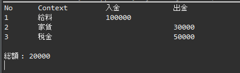
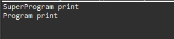

[Java] 8. クラスの継承とthis、superキーワードの使い方
こんにちは。明月です。
この投稿はクラスの継承とthis、superキーワードの使い方に関する説明です。
以前にクラスを作成する方法に関して投稿しました。
link - [Java] 7. クラスを作成する方法(コンストラクタを作成方法)
クラスは一つの目的をおいて構成すると説明しました。でも仕様によって様々なクラスをオブジェクトを作れば似ているクラスを多数に作ることを見れることがあります。
以前の投稿で説明した家計計算クラスで例を説明したことがありますが、それを参照して説明します。
import java.util.List;
import java.util.ArrayList;
// 家計簿クラス
public class Privatefinance {
// メンバー変数
// 入金のリスト
private List<Integer> input;
// 出金のリスト
private List<Integer> output;
// コンストラクタ
public Privatefinance() {
// リストを割り当て
this.input = new ArrayList<>();
this.output = new ArrayList<>();
}
// 入金関数
public void input(int money) {
// メンバー変数に金額を追加
this.input.add(money);
}
// 出金関数
public void output(int money) {
// メンバー変数に金額を追加
this.output.add(money);
}
// inputリストのデータを取得関数
protected int getInput(int i) {
// inputリストのデータをリターン
return input.get(i);
}
// outputリストのデータを取得関数
protected int getOutput(int i) {
// outputリストのデータをリターン
return output.get(i);
}
// 計算関数
public int calculator() {
// 結果のための変数
int sum = 0;
// リストに格納したすべての入金金額を足す。
for (int i = 0; i < input.size(); i++) {
sum += input.get(i);
}
// リストの格納したすべての出金金額を引き。
for (int i = 0; i < output.size(); i++) {
sum -= output.get(i);
}
// 結果をリターン
return sum;
}
}
Privatefinanceのクラスは入金、出金に関数クラスです。基本的に入金、出金を貰って最終にcalculator関数を通って値段を計算することです。
でも、ここで仕様によって通帳の内訳の機能があるクラスを追加したいです。つまり、クラスの内容は基本的に入金、出金は同じですが、入金、出金の順番と内容がある内訳が必要です。
ここで条件は上のクラスはもうサービスで運用しているし、もう検証が終わったクラスなので、できれば修正したくないです。なぜなら、修正があるとまた検証のためにテストが必要からです。上のクラスはすごく簡単のクラスだから少し修正しても問題ないですが、もっと複雑な仕様だと思えば理解すると思います。
その条件にするとすごく簡単にする方法は上のクラスをコピペしてクラス名を変更して作成すればよいです。また、他の仕様が追加すれば、そのことに続けてクラスをコピペで追加すればよいです。
でも、Javaの仕様によってListクラスは使用禁止になりました。その可能性はほぼ0パーセントになりますが、例えばのとして考えます。
それば問題がすべてのクラスのメンバー変数のinputとoutputのデータタイプを変更しなければならないです。そのクラスが20個~30個にするとすべて修正してすべてテスト及び検証しなければならないです。
実際のプロジェクトで本当にその作業することが多いです。
でも、上の問題はJavaの継承の機能を利用すればすごく簡単に解決します。
import java.util.ArrayList;
import java.util.List;
// Accountクラスを作成、Privatefinanceクラスを経書
public class Account extends Privatefinance {
// インラインクラス、つまり、クラス内部だけ使えるクラス。
private class Context {
String context;
int type;
}
// 通帳内訳を格納する変数
// 変数の割り当てはコンストラクタですべきが、直接メンバー変数に宣言を可能。
private List<Context> context = new ArrayList<>();
// 上のContextクラス生成関数
private Context newContext(String context, int type) {
// Contextクラス生成
Context c = new Context();
// 内訳
c.context = context;
// タイプ
c.type = type;
// 生成されたクラスをリターン
return c;
}
// 入金関数(以前クラスでは金額だけ入れるが、内訳内容も追加して再定義)
public void input(String context, int money) {
// Contextインスタンス生成
Context c = newContext(context, 1);
// 内訳追加
this.context.add(c);
// Privatefinanceクラスのinput関数を呼び出す。
super.input(money);
}
// 出金関数(以前クラスでは金額だけ入れるが、内訳内容も追加して再定義)
public void output(String context, int money) {
// Contextインスタンス生成
Context c = newContext(context, 2);
// 内訳追加
this.context.add(c);
// Privatefinanceクラスのoutput関数を呼び出す。
super.output(money);
}
// 出力関数
public void print() {
// ヘッダー出力
System.out.println("No\tContext\t\t入金\t\t出金");
// すべての内訳の順番はcontextリストにある。
// forの変数初期値は複数変数宣言も可能。
for (int inputIndex = 0, outputIndex = 0, i = 0; i < context.size(); i++) {
// contextリストにからContextインスタンスを取得
Context c = context.get(i);
int money = 0;
if (c.type == 1) {
// 入金リストから金額を取得
money = getInput(inputIndex);
// 入金リストのインデクス増加
inputIndex++;
// コンソール出力
System.out.println((i + 1) + "\t" + c.context + "\t\t" + money + "\t\t");
} else {
// 出金リストから金額を取得
money = getOutput(outputIndex);
// 出金リストのインデクス増加
outputIndex++;
// コンソール出力
System.out.println((i + 1) + "\t" + c.context + "\t\t" + "\t\t" + money);
}
}
}
// 実行関数
public static void main(String... args) {
// Accountインスタンスを生成
Account account = new Account();
// 通帳入金
account.input("給料", 100000);
// 通帳出金
account.output("家賃", 30000);
// 通帳出金
account.output("税金", 50000);
// 通帳内訳
account.print();
// 改行
System.out.println();
// コンソール出力
System.out.println("総額 : " + account.calculator());
}
}

上のAccountクラスはPrivatefinanceのクラスを継承しました。
クラスを継承する時にはextendsのキーワードを使います。Javaの継承ルールは二つ以上のクラスの複数継承は禁止されています。つまり、一つだけのクラスを継承することができます。
継承の意味はAccountクラスでPrivatefinanceのクラスのすべての機能を使えることができるという意味です。
上の例をみれはmain関数でAccountクラスにはcalculator関数がないので呼び出すことができます。でも親クラスのPrivatefinanceのクラスでそのクラスがあるから使えることです。
Accountクラスでinput関数を作成しました。Privatefinanceのクラスにもあるクラスですが、input関数を再作成しました。でもAccountクラスのinput関数とPrivatefinanceクラスのinput関数はパラメータタイプが違うので同じ関数ではないです。
でも同じパラメータなら作成することができないかというとJavaには再定義(override）という機能がありまして、可能です。再定義(override)のことは説明が長いので別途の投稿で説明します。
後、Accountクラスのinput関数をみれば中でsuper.input(money)を作成したことを確認できます。
ここでthisとsuperの差異を分かりますが、thisは現在のクラス(Accountクラス)の領域を参照すること、superは親クラス(Privatefinanceクラス)の領域を話すことです。
つまり、super.inputはPrivatefinanceクラスのinput関数を呼び出すことです。
// 親クラス(SuperProgram)
class SuperProgram {
// 関数
public void print() {
// コンソール出力
System.out.println("SuperProgram print");
}
}
// クラス、SuperProgramクラスを継承する。
public class Program extends SuperProgram{
// 関数
public void print() {
// コンソール出力
System.out.println("Program print");
}
// 関数
public void run() {
// 親クラスのprint関数を呼び出す。
super.print();
// 現クラスのprint関数を呼び出す。
this.print();
}
// main関数
public static void main(String... args) {
// Programインスタンスを生成
Program p = new Program();
// run関数呼び出す。
p.run();
}
}

上の例をみればProgramクラスのrun関数を呼び出したらthisとsuperの差異が明確に見えます。
それなら継承の長所はなにか？
ソースの可読性がよくなります。ソースの可読性はどの程にソースが簡単に読めるかということですが、ソースのステップが少なるから可読性がよくなることです。
管理の容易性もよいです。もし、コピペでクラスを作成したと思えば最初のクラスでバグがある場合にコピペしたすべてのクラスを修正しなければならないです。そうなら作業の漏れが発生する可能性もあるし、そのことで管理性が大変になることです。
でも、継承機能を利用すれば？そうです。最初の親クラスだけ修正すればすべてか反映されます。
そして最初にクラスの継承はOOP特性の一つなので、そのことによって設計パターンと開発方法が多いし、Javaというプログラム言語をすごく効率的に利用することができます。
ここまでクラスの継承とthis、superキーワードの使い方に関する説明でした。
ご不明なところや間違いところがあればコメントしてください。
- [Java] 15. 列挙型(バイナリデータビット演算子の使用例)2019/08/23 19:46:10
- [Java] 14. オブジェクト指向プログラミング(OOP)の4つ特性(カプセル化、抽象化、継承、多相化)2019/08/22 20:08:37
- [Java] 13. 抽象クラス(abstract)と継承禁止(final)2019/08/22 00:06:20
- [Java] 12. インタフェース(interface)2019/08/20 23:46:23
- [Java] 11. StringのhashCodeとequals、そしてtoStringの再定義(override)2019/08/20 00:42:04
- [Java] 10. メモリの割り当て(stackメモリとheapメモリ、そしてnew)とCall by reference(ポインタによる参照)2019/08/07 20:53:34
- [Java] 9. アクセス修飾子とstatic2019/08/06 20:22:48
- [Java] 8. クラスの継承とthis、superキーワードの使い方2019/08/05 23:22:58
- [Java] 7. クラスを作成する方法(コンストラクタを作成方法)2019/08/02 22:45:42
- [Java] 6. 関数の使い方(関数のオーバーロードと再帰的な方法について)2019/08/01 20:40:40
- [Java] 5. 配列とリスト(List)、マップ(Map)の使い方2019/07/26 23:25:58
- [Java] 4. 制御文2019/07/25 23:37:36
- [Java] 3. 演算子2019/07/25 23:38:36
- [Java] 2. 変数と定数の宣言方法、そして原始データタイプとクラスデータタイプの差異2019/07/24 23:12:32
- [Java] 1. Javaとは？、Javaインストール、Eclipseインストール2019/07/24 23:03:21
- [Bootstrap] HTMLデザインのフレームワークのBootstrap紹介2020/07/30 19:06:36
- [Python] メール(smtplib)を送信する方法2020/07/27 18:38:43
- [Python] HttpConnection(requestsモジュール)でウェブサーバーで接続する方法2020/07/20 14:41:51
- [Python] Excel(openpyxl)を扱う方法2020/07/16 16:40:31
- [Python] ファイル圧縮、解凍(zipfile)する方法2020/07/14 19:14:22
- [Python] Apache cgiでPythonを使う方法2020/07/09 19:58:19
- [Python] Web serverを起動する方法(http.server)2020/07/09 00:13:13
- [Python] WebSocketを使う方法2020/07/07 17:29:18
- [Python] PythonとJavaのソケット通信する方法2020/07/03 18:35:50
- [Python] PythonとC#のソケット通信2020/07/01 19:28:22
- [Python] INI(環境設定ファイル)を扱う方法2020/06/30 18:26:01
- [Python] Jsonを扱う方法2020/06/29 19:18:15
- [Python] XMLファイルを扱う方法2020/06/26 19:18:14
- [Python] IOを利用してCSVファイルを扱う方法2020/06/25 18:20:30
- [Python] 21. データベース(mariaDB)を連結する方法2020/06/24 18:51:50